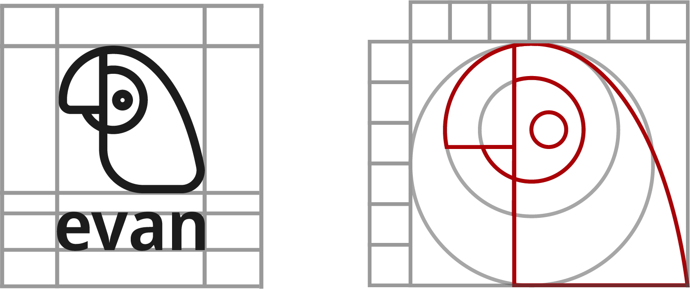
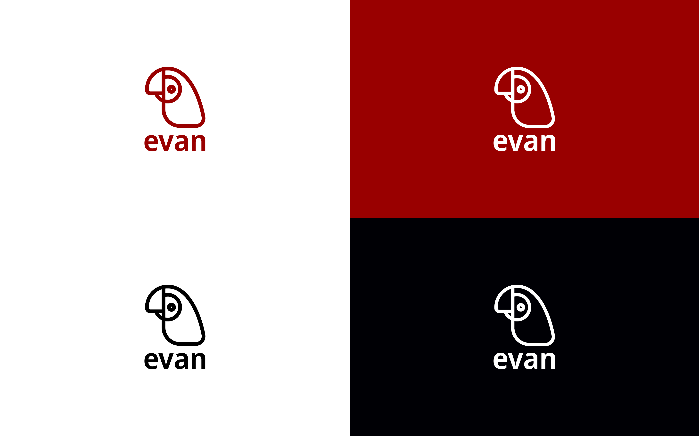
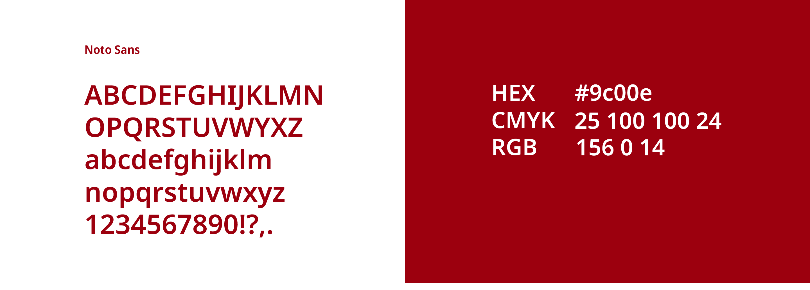
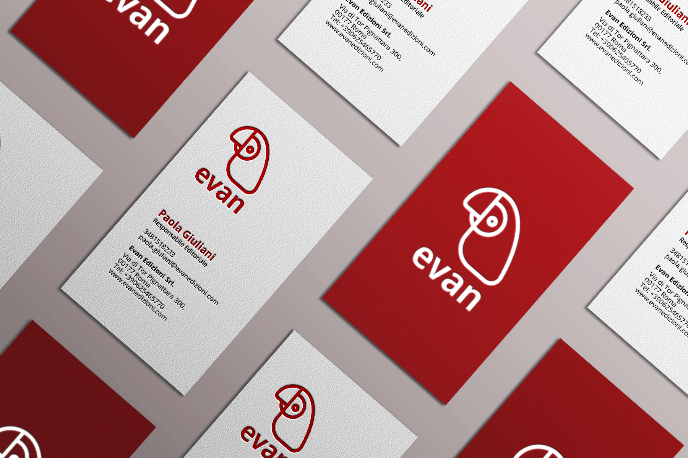
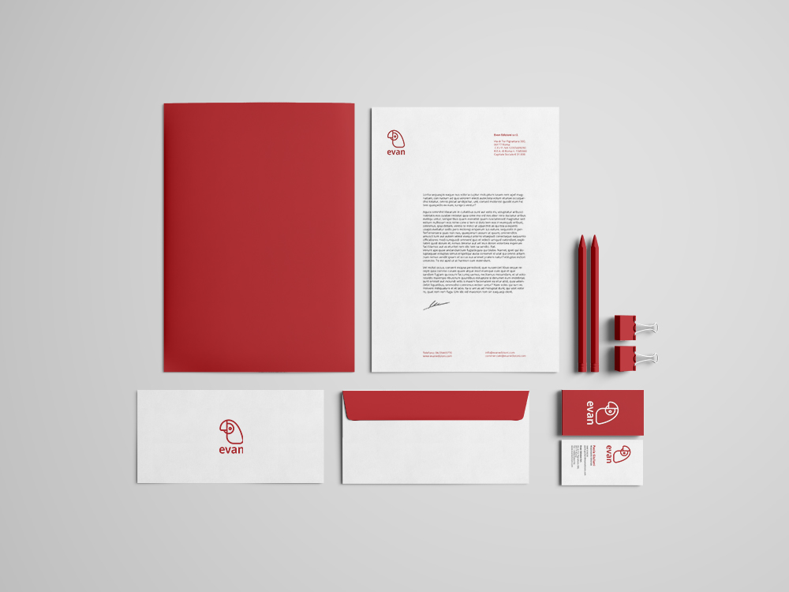
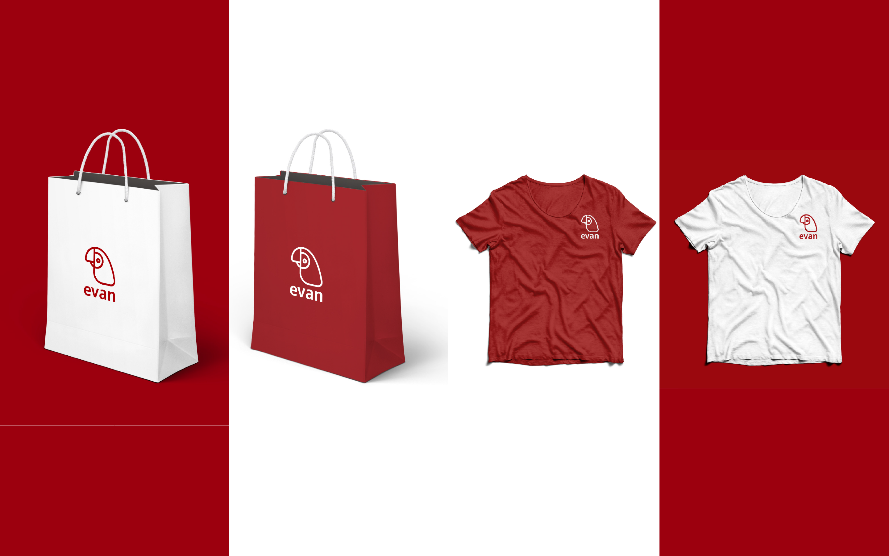
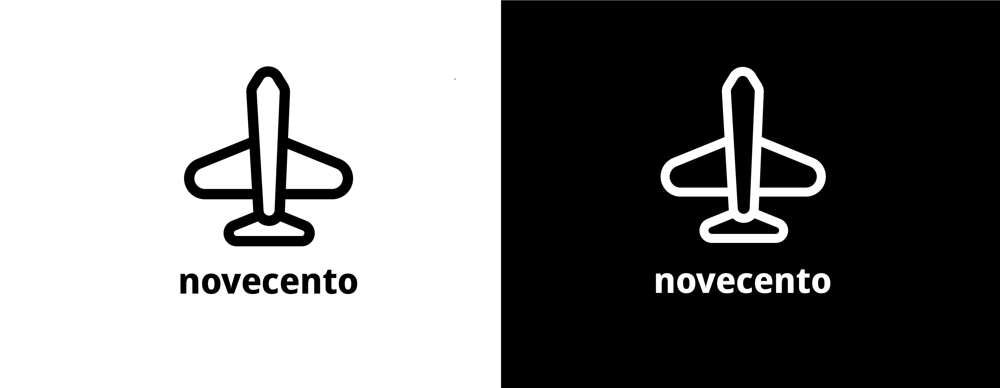
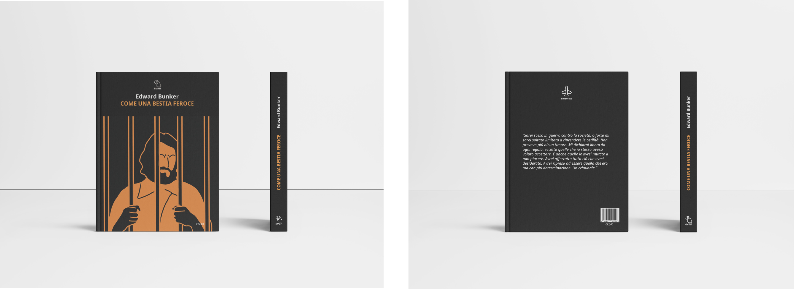

<!DOCTYPE html>
<html lang="it">
  <head>
    <meta charset="utf-8">
    <meta name='viewport'
      content='width=device-width, initial-scale=1.0, maximum-scale=1.0'>
    <title>Ilaria Pazienza</title>
    <link rel="stylesheet" href="assets/css/evan.css">
  </head>

  <body>
    <div class="content">

<!-- Navbar -->

    <div class="header">
      <div class="logo-container">
      <a href="index.html">
        
      </a>
    </div>

      <nav>
        <ul class="nav-links">
          <li><a href="index.html">Home</a></li>
          <li><a href="portfolio.html" id="portfolio">Portfolio</a></li>
          <li><a href="about.html">About</a></li>
          <li><a href="contacts.html">Contatti</a></li>
        </ul>
      </nav>

    </div>

<!-- Presentation --->

<div class="container">
<h1>Evan</h1>
<br>
<p> Evan è una giovane casa editrice dedita alla pubblicazione di letteratura
antica, moderna e contemporanea. Necessita di un'identità visiva moderna,
riconoscibile e che si contraddistingua dalla concorrenza.
<br>
Si rivolge ad un target molto ampio, dai 18 ai 60 anni.
<br>
</p>
<br>



<br>
<br>
<br>
<p>Il pappagallo è stato scelto perché è un animale longevo, dinamico e
  curioso. La sua longevità rappresenta appieno l'ampio target e il suo
  piumaggio colorato indica la grande varietà della letteratura pubblicata
  dalla casa editrice.</p>
  <br>
  <br>
  <br>




<br>
<br>
<br>

<p>La scelta dei colori è ricaduta sul rosso: risalta subito all’occhio,
  è un colore vivace e riprende il piumaggio del pappagallo.</p>

  <br>
  <br>
  <br>





<br>
<br>
<br>

<p>Novecento è il nome della collana editoriale.
   Il pittogramma è un aereo perché è la perfetta rappresentazione di un
   volatile meccanico ed è una delle invenzioni più importanti del XX secolo.
   Mantiene lo stesso stile del logo della casa editrice, dandogli coerenza.</p>

<br>
<br>
<br>



<br>
<br>
<br>

<p>È stata creata anche la cover di un libro della casa editoriale, "Come una Bestia Feroce"
  di Edward Bunker</p>

  <br>
  <br>
  <br>

<br>
<br>


</div>
</div>

<!-- footer --->
<footer>
  <div class="footer-content">
    <h4>Ilaria Pazienza &copy; 2021</h4>
  </div>
</footer>

</body>
</html>
